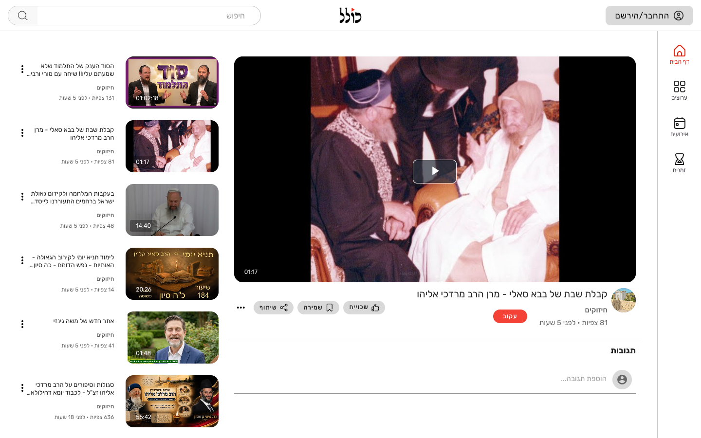
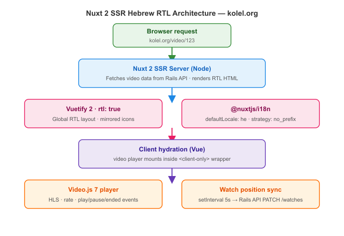

Building an RTL Hebrew Video Platform with Nuxt 2 SSR and Video.js
How we configured Nuxt 2 universal SSR with Vuetify's RTL mode, Hebrew as the default locale, and a Video.js player that syncs watch position back to the server — for kolel.org.
The Problem
Hebrew is a right-to-left language. Building a video platform where Hebrew is the primary language — not an afterthought — means RTL has to be the default at every layer: layout, navigation, text direction, input alignment, and icon mirroring. On top of that, the site needed server-side rendering for SEO (video titles, channel names, and category pages all need to be crawlable), and a player that remembers exactly where a user left off across sessions and devices.
What We Built

kolel.org is a Nuxt 2 universal app — SSR on first load, client-side navigation thereafter.
Vuetify 2 handles the UI with RTL enabled globally. @nuxtjs/i18n manages locale detection with Hebrew (he) as the default and English (en) as a fallback.
Video playback uses Video.js 7 with a custom Vue wrapper that tracks position and syncs it to the Rails API on a 5-second interval.
How It Works

Key Technical Decisions
1. Vuetify RTL enabled globally
Setting rtl: true in vuetify.options.js flips all Vuetify components — navigation drawers open from the right, icons mirror, flex directions invert, and text aligns right by default. One flag, entire UI:
// vuetify.options.js
export default {
defaultAssets: {
font: false,
icons: 'mdi'
},
theme: {
themes: {
light: { primary: '#1e88e5' },
dark: { primary: '#1e88e5' }
}
},
rtl: true // flips the entire Vuetify UI to right-to-left
}2. Hebrew as the default locale, no URL prefix
@nuxtjs/i18n is configured with strategy: 'no_prefix' so Hebrew URLs are clean (e.g. /video/123 not /he/video/123).
Browser language detection is disabled — every visitor gets Hebrew first, with English available via a manual toggle:
// config/i18n.js
const messages = {
en: { ...require('../locales/en.json'), $vuetify: en, dir: 'ltr' },
he: { ...require('../locales/he.json'), $vuetify: he, dir: 'rtl' },
}
export default {
locale: 'he',
fallbackLocale: 'en',
messages
}
// nuxt.config.js
i18n: {
locales: ['en', 'he'],
defaultLocale: 'he',
localeDetection: false,
detectBrowserLanguage: false,
strategy: 'no_prefix',
vueI18n: i18n
}3. Video.js player with watch-position tracking
The player is a Vue component that mounts Video.js imperatively in mounted().
A setInterval running every 5 seconds calls storeVideoPosition(), which sends the current playback time to the Rails API — so a user who closes the tab resumes from the exact second on any device:
import videojs from 'video.js';
// mounted()
this.player = videojs(this.$refs.videoPlayer, this.playerOptions);
this.player.ready(() => {
this.playVideo(this.videoUrl);
});
this.player.on('ratechange', this.playerRateChanged);
this.player.on('play', this.playing);
this.player.on('pause', this.stopInterval);
this.player.on('ended', this.stopInterval);
// watch-position sync — fires every 5 s while playing
storeVideoPosition() {
const payload = {
id: this.video.id,
position: Math.ceil(this.player.currentTime()),
};
this.video.user_watch = {
...(this.video.user_watch || {}),
position: payload.position,
};
this.markWatch(payload); // Vuex action → Rails API PATCH /watches/:id
}4. SSR + hydration without layout shift
Because Video.js requires a real DOM, the player component is wrapped in a <client-only> tag in Nuxt.
The server renders the video metadata, title, and channel info (crawlable by search engines) while the player hydrates client-side after JavaScript loads — no layout shift because the player slot is sized with CSS before hydration.
Results / What Changed
- Full Hebrew RTL layout across every page — no per-component
diroverrides needed - Video titles, channel pages, and category routes are indexed by search engines via SSR
- Watch position resumes cross-device — creators report viewers completing more long-form lessons
- English toggle works without a page reload — Vuetify + i18n switch both layout direction and copy simultaneously
Stack
Building an internationalized or RTL web platform? Get in touch →